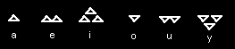

Skaven vowels are as follows: A single pyramid = a; double pyramid = e; triple pyramid = I; single inverted pyramid =o; double inverted pyramid = u; triple inverted pyramid = y. As mentioned above, these vowels are seldom used, and there appears to be no uniform agreement on their placement. They often appear below or above the letters they are intended to modify. This may be a matter of Clan dialect.